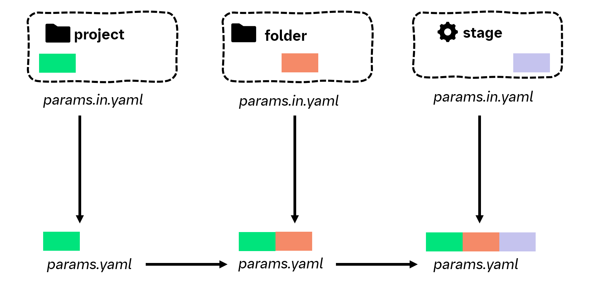

Configuration files#
YAML-based config files in a project, folder, or stage serve as a single point of truth for all input files, output files or parameters.
For this purpose, configurations can be defined at each level of your project in a params.in.yaml file.
Using dso compile-config the params.in.yaml files are compiled into params.yaml with the following features:
inheritance: All variables defined in
params.in.yamlfiles in any parent directory will be included.templating: Variables can be composed using jinja2 syntax, e.g.
foo: "{{ bar }}_version2".path resolving: Paths will be always relative to each compiled
params.yamlfile, no matter where they were defined.
Therefore, you only need to read in a single params.yaml file in each stage.
Compiling configuration files#
To generate a params.yaml file for each params.in.yaml file, use:
dso compile-config
params.yaml files are not tracked by git. Never modify a params.yaml file by hand, it will be overwritten.
In folders without a params.in.yaml file, no params.yaml file will be generated.
Inheritance#
The following diagram displays the inheritance of configurations:
{kind=link}
DSO leverages hiyapyco with method=METHOD_MERGE and none_behavior=NONE_BEHAVIOR_OVERRIDE
to implement inheritance. This means
Values in a
params.in.yamlfile at a deeper level (e.g. stage) take precedence over values in a parent folder.Values are added existing lists
Dictionary entried are added to existing dictionaries
To exclude an inherited parameter, set the variable to
null.
Templating#
Templating is again implemented in hiyapyco using the interpolate=True flag.
This allows variable to be composed using jinja2 syntax, e.g. foo: "{{ bar }}_version2".
Defining paths#
To ensure that, despite inheritance, paths are always relative to each compiled params.yaml file, relative paths need to be preceded with !path, e.g.:
samplesheet: !path "01_preprocessing/input/samplesheet.txt"
DSO supports compiling paths into absolute and relative paths. Relative paths are relative to the location of
each compiled params.yaml file. By default, DSO uses relative paths. To enable absolute paths, see
configuration. To learn
how to work with relative paths in Python/R scripts see python usage and R usage.
Example#
Let’s consider a project which has the following two params.in.yaml files at the project root
and in a stage subfolder.
/params.in.yamlthresholds:
fc: 2
p_value: 0.05
metadata_file: !path "metadata/metadata.csv"
dataset_name: typical_analysis
file_with_abs_path: "/data/home/user/{{ dataset_name }}_data_set.csv"
remove_outliers: true
exclude_samples:
- sample_1
- sample_6
/stage/params.in.yamlthresholds:
fc: 3
p_adjusted: 0.1
samplesheet: !path "01_preprocessing/input/samplesheet.txt"
remove_outliers: null
exclude_samples:
- sample_42
This results in the following compiled params.yaml files:
/params.yamlthresholds:
fc: 2
p_value: 0.05
metadata_file: metadata/metadata.csv
dataset_name: typical_analysis
file_with_abs_path: /data/home/user/typical_analysis_data_set.csv
remove_outliers: true
exclude_samples:
- sample_1
- sample_6
/stage/params.yamlthresholds:
fc: 3
p_value: 0.05
p_adjusted: 0.1
metadata_file: ../metadata/metadata.csv
dataset_name: typical_analysis
file_with_abs_path: /data/home/user/typical_analysis_data_set.csv
remove_outliers:
exclude_samples:
- sample_1
- sample_6
- sample_42
samplesheet: 01_preprocessing/input/samplesheet.txt
Accessing stage config#
To ensure that dso correctly reruns stages when dependencies have changed, it is really important
to declare all input files/params in dvc.yaml. dso compile-config generates params.yaml files that,
in principle, you can read in with a YAML parser in a programming language of your choice.
However, we recommend that you use one of the following interfaces to access the stage configuration.
These interfaces ensure that you will have access only to the parameters declared in the dvc.yaml file as
either input, parameter, or output. This ensure that you cannot forget to declare a parameter that you actually
use in your analysis.
dso get-config prints the filtered params file for a given stage to STDOUT. This makes it really easy to
call it from other languages as a system call. In fact, this is what read_params in R and Python are doing under the hood.